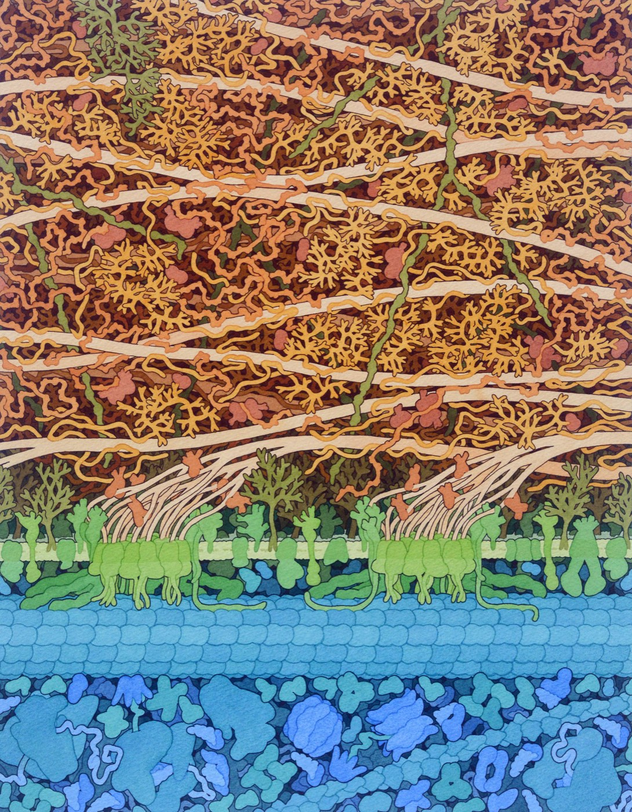

2.5 The Fate of Glucose
Four chapters have gone into making one molecule. A plant has taken carbon dioxide and water, pushed them uphill using light, and produced glucose — a charged battery sitting in a leaf. This chapter spends it. And it turns out the spending is done by every living thing on Earth, in an organelle you have inside you right now, in about thirty times more detail than the equation suggests.
Why glucose, and what a plant does with it
Start with a question the anchor guide asks first: why is it so important that photosynthesis produces glucose in particular?
Because glucose is a hub. It is small, soluble, stable at body temperature, easy to move about, and — this is the key thing — it is a set of carbon, hydrogen and oxygen atoms in an arrangement that almost every other organic molecule can be built from. A cell can take glucose and make a fat, a nucleotide, a cellulose fibre or, with a bit of nitrogen added, an amino acid.
So the fate of a glucose molecule is one of three things:
- Stored — joined into long chains as starch in a plant or glycogen in an animal, or converted to sucrose for transport.
- Built into something structural — cellulose for cell walls, fats for membranes and storage, amino acids for protein.
- Respired — taken apart to release the energy in its bonds and charge up ATP.
The first two are how a plant's biomass grows. A tree gaining a tonne of wood is glucose that went to cellulose. The third is the subject of this chapter, and of everything that is alive.

Notice that this answers a question from the unit overview. Where does the mass of a tree come from? Glucose, from the air, mostly converted to cellulose. When you weigh a log you are largely weighing carbon dioxide that has been rearranged and stacked up.
The screaming gummy bear
There is a demonstration your class may have seen. A test tube of molten potassium chlorate is heated until it is giving off oxygen, and a single gummy bear is dropped in. The result is violent: a roaring purple flame, a shriek of escaping gas, and afterwards a tube containing very little.
![A laboratory demonstration. A boiling tube is clamped at an angle to a retort stand standing on a heatproof mat, with a lit Bunsen burner below it. In the bottom of the tube is a pool of glowing molten liquid, labelled molten potassium chlorate. Above the open mouth of the tube, a pair of tongs holds a red gummy bear, labelled gummy bear, sugar. Inside the tube a violent white and purple flame rises from the pool; the space it fills is labelled oxygen and the flame itself is labelled heat, light and sound. Wisps of pale gas escape from the mouth of the tube, labelled carbon dioxide and water vapour.](../images/u2/gummy-bear-demo.jpeg)
Work through the anchor guide's questions on it, because every answer is a piece of this chapter.
| Question | Answer |
|---|---|
| What is a gummy bear made of? | Almost entirely sugar — sucrose and glucose syrup — plus a little gelatine and water. |
| What kind of energy is inside it? | Chemical potential energy, in the C–C and C–H bonds of the sugar. |
| What has to happen for that energy to be transformed? | The bonds have to be broken and new, stronger bonds formed — which needs oxygen, and a push to get started. |
| Absorbed or released? | Released, overwhelmingly. You can see it (light) and hear it (sound) and feel it (heat). Exergonic. |
| Catabolic or anabolic? | Catabolic. A big molecule was taken apart into small ones. |
| What happened to the matter? | It left as gas — carbon dioxide and water vapour. It was not destroyed; it was rearranged and it floated away. |
| More or less chemical potential energy afterwards? | Far less. CO₂ and H₂O sit at the bottom of the energy hill from 2.1. |
Now the point of the demonstration. Burning a sugar and respiring a sugar are the same reaction. Same reactants, same products, same energy released, same drop down the same hill.
The difference is entirely in the route. Combustion does it in one violent step and the energy all comes out as heat and light, which is useless to a cell and would cook it. Respiration does it in roughly thirty small enzyme-controlled steps, at body temperature, capturing a good share of the energy in ATP along the way.
A cell is not doing different chemistry from a fire. It is doing the same chemistry carefully.
What cellular respiration is — and what it is not
Cellular respiration is the controlled release of energy from organic molecules, inside cells, to make ATP. Its overall equation is the mirror of photosynthesis:
C₆H₁₂O₆ + 6 O₂ → 6 CO₂ + 6 H₂O + energy (ATP)
Check it before you accept it: 6 carbon each side, 12 hydrogen each side, 18 oxygen each side. It balances, and it has to, because atoms are conserved.
Respiration is not breathing. This is the single most common confusion in the whole unit, and it is worth being blunt about.
Breathing — properly, ventilation — is moving air in and out of lungs. It is a mechanical process, it happens in an organ, and plenty of living things do not do it at all: a tree does not breathe, a worm does not breathe, a bacterium does not breathe.
Cellular respiration is a chemical process that happens inside cells. Every living thing does it, every second, including trees, worms, bacteria and yeast. It does not require lungs and it does not always require oxygen (see 2.6).
Breathing exists to supply respiration — to bring oxygen to the cells that need it and take away the CO₂ they made. One is the delivery lorry; the other is the factory.
You will find diagrams, including some in your own course materials, that label the CO₂ coming out of an animal as "breathing animals". Watch for it. The label describes the lorry and points at the factory.
Two more distinctions worth nailing while we are here:
- Respiration is not just for animals. Plants respire in every cell, day and night. A leaf in the light does both at once, and photosynthesises faster than it respires — which is why it produces oxygen on balance. In the dark it only respires, and consumes oxygen like anything else.
- Respiration is not only for glucose. Fats and proteins can be fed into the same pathway at different points. Glucose is the standard example because it is the one everything can use, and because it is the one photosynthesis makes.
![A loop diagram. At the top, a cut-open green chloroplast showing stacks of flat discs, labelled chloroplast and photosynthesis. At the bottom, a cut-open brick-red mitochondrion showing deeply folded inner membranes, labelled mitochondrion and cell respiration. A thick blue-grey arrow curves down the right side from the chloroplast to the mitochondrion, labelled glucose and oxygen. A second blue-grey arrow curves up the left side from the mitochondrion back to the chloroplast, labelled carbon dioxide and water, so the two together form a closed circle. A wavy amber arrow arrives from a sun at the top left, labelled light energy, and a second wavy amber arrow leaves the mitochondrion at the bottom right, labelled energy for the cell’s work.](../images/u2/photosynthesis-respiration-loop.jpeg)
The mitochondrion
The mitochondrion is where most of respiration happens. Its structure will look familiar, because it uses exactly the same trick as the chloroplast.
- An outer membrane, smooth, defining the organelle.
- An inner membrane, folded into deep finger-like projections called cristae.
- The fluid inside the inner membrane is the matrix: a concentrated soup of enzymes, and also the mitochondrion's own DNA and ribosomes.
The folding is the point. The electron transport chain — the stage that makes most of the ATP — is a set of proteins built into the inner membrane. More membrane area means more chains, and more chains means more ATP per second. Cristae are how you fit a large membrane into a small organelle.
This predicts something you can check: cells that need a lot of ATP should have more mitochondria, with more densely packed cristae. They do. Heart muscle is roughly a third mitochondria by volume. A migrating bird's flight muscle is packed with them. A skin cell has relatively few.
Here is the inside of one. This animation, made by XVIVO for Harvard's BioVisions project, travels into a mitochondrion and along its folded inner membrane, where the electron transport chain and ATP synthase are packed together.
Mitochondria have their own circular DNA, their own ribosomes, and they divide by splitting in two — all of which are bacterial habits. The accepted explanation is that mitochondria descend from free-living bacteria that were engulfed by an ancestral cell around a billion and a half years ago and never left. Chloroplasts have the same story with a different bacterium. You will meet the evidence properly in Unit 6.
"Mitochondria make energy." They do not, and cannot — energy cannot be made. Mitochondria transfer energy: they move it out of the bonds of glucose and into the bonds of ATP, losing a good deal as heat in the process. "The powerhouse of the cell" is a fine slogan and a slightly misleading one, because a power station does not make energy either.
Four stages, and where each one happens
Respiration is not one reaction. It is four stages, in two different places, and the places matter as much as the chemistry.
1. Glycolysis — in the cytosol
Glucose (6 carbons) is split into two molecules of pyruvate (3 carbons each). Glycolysis means, literally, sugar-splitting.
It costs 2 ATP to get started and produces 4, so the net gain is 2 ATP. It also loads 2 NADH. Crucially, glycolysis needs no oxygen and no mitochondrion — it happens in the cytosol, in every cell on Earth including bacteria, and that is a large clue about how old it is.
Get the 4 and the 2 right. Most diagrams print only the net figure of 2 ATP, and students then think glycolysis makes 2 and are baffled when a question mentions 4. Glycolysis produces 4 ATP, invests 2 of its own to prime the reaction, and nets 2. Your teaching deck says this explicitly, and it is worth writing down.
2. Pyruvate oxidation — in the matrix
The two pyruvate molecules cross both membranes into the matrix. Each has one carbon snipped off as CO₂ and becomes acetyl-CoA (2 carbons). Per glucose: 2 CO₂ released, 2 NADH made, no ATP at all. Sometimes called the link reaction, because it links glycolysis to the next stage.
3. The citric acid cycle — in the matrix
Also called the Krebs cycle. Acetyl-CoA enters a loop of reactions that strips off its remaining carbons as CO₂ and loads up electron carriers. Running twice, once per acetyl-CoA, it yields per glucose: 4 CO₂, 6 NADH, 2 FADH₂ and 2 ATP.
Add the CO₂ up. Two from pyruvate oxidation, four from the cycle: 6 CO₂ — which is exactly the six carbon atoms that were in the glucose. By the end of stage 3 the sugar has been completely dismantled, and almost no ATP has been made.
4. The electron transport chain — in the inner membrane
Now the payoff. All those NADH and FADH₂ molecules deliver their electrons to a chain of proteins in the inner membrane. As electrons pass down the chain they release energy, which is used to pump hydrogen ions into the space between the membranes. The ions flood back through ATP synthase, and the flow makes ATP.
If that sounds familiar, it should — it is the same mechanism as the light reactions in 2.3, in a different organelle, with a different electron source. Nature reuses good machinery.
And at the very end of the chain sits oxygen. Its job is to accept the spent electrons, pick up hydrogen ions, and become water. That is oxygen's entire role in respiration, and it is why you die without it in minutes: if nothing takes the electrons at the end, the whole chain backs up, the carriers stay loaded, and every stage behind it stops.
Oxygen is the final electron acceptor. Not a reactant that gets burned, not a source of energy. It is the thing at the end of the queue that takes the rubbish away, and everything depends on it being there.
Build the model
This is the A3 modelling task from page 8 of your anchor guide, and it is the closest thing in this unit to the thing you are actually assessed on. You get a blank mitochondrion. You place every stage. Then you total the ATP yourself — and the sim works the total out from your own figures rather than telling you what it should be.
Build the respiration model
InteractiveThe arithmetic in the second half is worth restating in words, because a number you can derive is a number you will not misremember. Each NADH is worth about 2.5 ATP at the electron transport chain, and each FADH₂ about 1.5. Respiration produces 10 NADH and 2 FADH₂ per glucose, so the chain yields 10 × 2.5 + 2 × 1.5 = 28 ATP. Add the 4 made directly — 2 in glycolysis, 2 in the citric acid cycle — and the total is 32 ATP per glucose.
| Stage | Where | ATP direct | NADH | FADH₂ | CO₂ | Needs O₂? |
|---|---|---|---|---|---|---|
| Glycolysis | Cytosol | 2 (net) | 2 | 0 | 0 | No |
| Pyruvate oxidation | Matrix | 0 | 2 | 0 | 2 | No* |
| Citric acid cycle | Matrix | 2 | 6 | 2 | 4 | No* |
| Electron transport chain | Inner membrane | 28 | — | — | 0 | Yes |
| Total | 32 | 10 | 2 | 6 |
*The asterisks matter. Stages 2 and 3 use no oxygen in their own chemistry — but they stop anyway without it, because they have nowhere to put the electrons they keep collecting. Only stage 4 uses oxygen directly, and it is the only one that has to.
Older textbooks give 36 or 38 ATP. They used 3 ATP per NADH and 2 per FADH₂; careful measurement brought those figures down. Either set of numbers gives the same story, and the story is the part to keep: the vast majority of the ATP comes from the electron transport chain, and therefore requires oxygen. In 2.6 you take the oxygen away and find out exactly what that costs.
ATP, and where the matter went
ATP — adenosine triphosphate — is the cell's rechargeable battery. Three phosphate groups in a row, all negatively charged and all crammed together, is an unstable arrangement. Break the last one off and the molecule relaxes into a lower-energy state, releasing energy the cell can couple to some uphill job. What is left is ADP, adenosine diphosphate.
The recycling is astonishing in scale. A resting human holds only about 250 g of ATP at any moment, and uses roughly their own body weight of it every day. Each molecule is charged and drained thousands of times over. If ATP were made once and thrown away you would need to eat about 65 kg of it daily.
The machine that recharges the battery is an enzyme called ATP synthase, and it really does spin. In this animation from Drew Berry at WEHI, built from the enzyme's real structure, hydrogen ions flowing through it turn it like a turbine, and each turn builds ATP from ADP and phosphate.
Now follow the matter, because this is where the chapter meets the unit title.
You ate 6 carbon atoms in one glucose molecule. Respiration released all 6 of them as CO₂ — 2 in pyruvate oxidation, 4 in the citric acid cycle. Every one of them leaves your body through your lungs.
This has a consequence people find genuinely surprising: when you lose weight, most of the lost mass leaves as exhaled carbon dioxide. Not as sweat, not down the toilet. You breathe it out. The fat is respired, the carbon comes off as CO₂, and you exhale it — and a plant somewhere will fix it again.
And follow the energy. Of the energy in a glucose molecule, a cell captures roughly a third as ATP. The other two-thirds becomes heat immediately. Then the ATP is spent, and that energy becomes heat too, a little later. Every joule you eat ends up as heat leaving your body — which is why a crowded room warms up, and why you can be found by a thermal camera.
Where this goes next
Everything in this chapter assumed oxygen was available. That assumption holds most of the time for you, and it does not hold at all for a yeast cell in a sealed tube of dough, a bacterium in a sealed jar, or your own leg muscles in the last two hundred metres of a race.
Chapter 2.6 removes the oxygen. Glycolysis, you may have noticed, never needed it — and that turns out to be the escape route. It is a poor one: you will calculate exactly how poor, and then run a real experiment on yeast that shows it happening.
Check your understanding
- Write the equation for aerobic respiration and check that it balances. Then say, for each product, which stage of respiration produced it.
- A student writes "plants photosynthesise and animals respire." Give two separate corrections.
- Glycolysis happens in the cytosol and needs no oxygen. Give one thing that fact lets a red blood cell do, and one thing it lets a yeast cell do.
- Explain, in terms of the electron transport chain, why a cell deprived of oxygen stops making ATP from the citric acid cycle as well — even though that cycle uses no oxygen itself.
- Heart muscle has far more mitochondria per cell than skin does, with more tightly packed cristae. Explain both observations.
- A 70 kg person loses 5 kg of fat. By what route, and through which organ, does most of that mass leave the body? Justify your answer with the equation.
- Show the arithmetic that gets from 10 NADH and 2 FADH₂ to 28 ATP, and then to a total of 32.
Quick check
Auto-marked. Get one wrong and it will point you back to the section that covers it.
Why is it useful that photosynthesis makes glucose in particular, rather than a fat or a protein?
Glucose is a hub. Follow the arrows out of it and you get cellulose, fats, sucrose, nucleic acids and — with nitrogen added from the soil — amino acids. Nitrogen is the one thing photosynthesis cannot supply, which is why plants still need minerals even though their mass comes from the air.
A plant is given plenty of light, water and carbon dioxide, and makes glucose steadily. Why does it still need minerals from the soil?
Read the element lists in Figure 2.16 and the pattern jumps out. Everything made from C, H and O alone can come straight from glucose; anything carrying N, S or P cannot. That single line is the difference between a plant that can grow on air and water and one that needs roots in soil.
A gummy bear burnt in oxygen and a gummy bear eaten and respired give the same products and the same total energy. What is the difference between them?
A cell is not doing different chemistry from a fire. It is doing the same chemistry carefully — at body temperature, in small steps, with something to catch the energy at each one. All the heat and light of the demonstration would simply cook a cell.
Suppose a cell could take a glucose molecule apart in one step instead of about thirty. What would change?
This is the gummy bear seen from the other side. The demonstration shows what one step looks like: a flame, a shriek, and energy pouring out in forms no cell could use. Thirty small steps buy you the chance to put something under the energy as it falls.
A carbon-cycle diagram labels the CO₂ coming out of a cow "Breathing animals". What is wrong with the label?
This is the single most common confusion in the unit, and it is printed on a teaching diagram in your own course materials. Ventilation moves air in and out of an organ; cellular respiration is chemistry happening in every cell of every living thing. One is the lorry, the other is the factory.
A student argues that a tree cannot respire, because it has no lungs. What is wrong with that?
Worms and bacteria make the same point more sharply still: no lungs anywhere, and respiration in every cell every second. Breathing is a delivery system some animals happen to have. Respiration is the thing being delivered to.
A student writes: "Plants photosynthesise and animals respire." Which correction is right?
A leaf in the light does both at once, and photosynthesises faster than it respires — which is why it produces oxygen on balance. Put it in the dark and it consumes oxygen like anything else. "Plants only photosynthesise" is a sentence that will cost you marks all the way through this unit.
A healthy plant sits in a sealed transparent jar in bright light. The jar is moved into complete darkness. What happens to the oxygen in it?
A leaf in the light runs both processes at once and photosynthesises faster, so oxygen goes up on balance — which is where "plants give off oxygen" comes from. Take the light away and only the slower process is left running, pointing the other way.
"Mitochondria make energy." What is wrong with that?
The same correction applies to "photosynthesis makes energy". Nothing in this unit makes energy. Energy is transferred and transformed; matter is rearranged. Every time a sentence says something makes energy, ask what it actually moved and where it came from.
A student writes: "A heart muscle cell makes more energy than a skin cell, which is why it has more mitochondria." How should that be corrected?
The structure makes a prediction you can check with a microscope: more inner membrane means more electron transport chains, and more chains means more ATP per second. A migrating bird's flight muscle is the extreme case. Nothing in that chain of reasoning involves making energy.
The citric acid cycle uses no oxygen in its own chemistry. So why does it stop within seconds when a cell is deprived of oxygen?
Oxygen's entire job is to sit at the end of the queue and take the spent electrons away. Remove it and the whole chain backs up — which is why a stage that never touches oxygen still depends on it completely, and why 2.6 has to solve the carrier problem before anything else.
Take the oxygen away from a cell and the citric acid cycle halts, yet glycolysis can keep turning for a while. What accounts for the difference?
Glycolysis needs no oxygen and no mitochondrion, which is a large clue about how old it is — every cell on Earth, bacteria included, still runs it. That independence is the escape route 2.6 opens up, and the 2 ATP it nets tells you how narrow an escape it is.
Someone loses 5 kg of fat. By what route does most of that mass leave the body?
Read it straight off the equation. The 6 carbons in a glucose molecule come out as 6 CO₂ — two in pyruvate oxidation and four in the citric acid cycle — and every one of them leaves through your lungs. A plant somewhere will fix them again.
A person sits quietly for an hour without eating, breathing out carbon dioxide the whole time. Where did the carbon in that CO₂ come from?
Every breath out is food leaving the body. Follow one glucose molecule and its six carbons come off in the matrix, dissolve into the blood and go out through the lungs — and a plant somewhere fixes them again. Matter goes round the loop; only the energy leaves it, as heat.